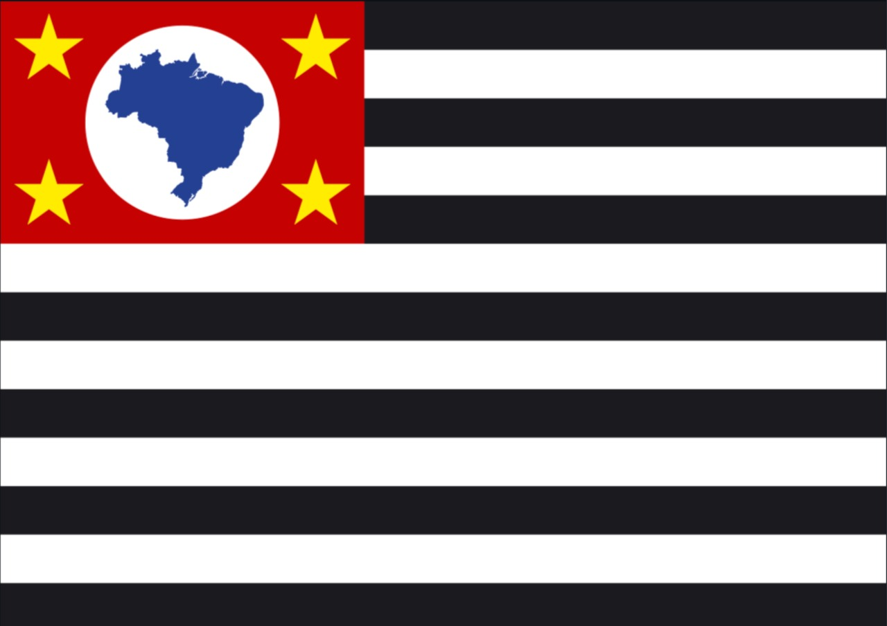

ALGUNS ESTADOS E CAPITAIS DO BRASIL
Rio Branco

Rio Branco é a capital do estado do Acre (AC).
Área territorial: 8.835km² População: 350mil habitantes.
Curiosidade:de “Capital da Natureza”, em razão dos seus atributos naturais.
Macapá

Macapá é a capital do estado do Amapá (AP).
Área territorial: 6.407km² População: 493.634 habitantes.
Curiosidade: a única que não faz ligação com outras capitais por meio de rodovias.
Maceió

Maceió é a capital do estado de Alagoas (AL).
Área territorial: 509,6km² População: 1.012.387 de habitantes.
Curiosidade: Muito procurada pelos turistas nos meses de verão centro financeiro, social e cultural de Alagoas.
Manaus

Manaus é a capital do estado do Amazonas (AM).
Área territorial: 11.401km² População: 2 milhões de habitantes.
Curiosidade: situada no centro da floresta amazônica.
Salvador

Salvador capital do estado da Bahia (BA).
Área territorial: 693,8 km² População: 2,7 milhões de habitantes.
Curiosidade: foi a primeira capital do BRASIL.
São Paulo

São Paulo é a capital do estado de São Paulo (SP).
Área territorial: 1.521km² População: 12 milhões de habitantes.
Curiosidade: maior cidade do país, é considerada uma metrópole mundial brasileira.